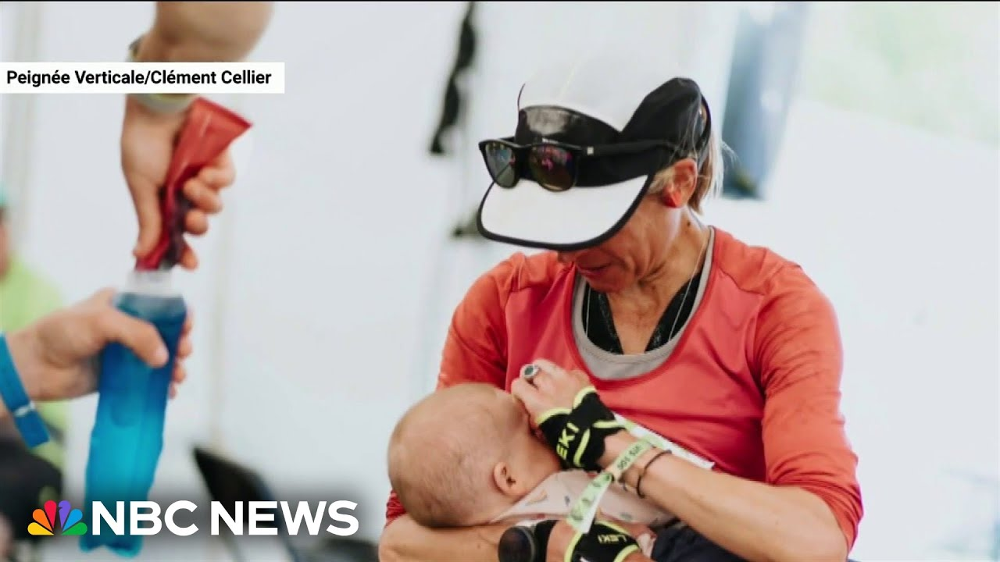

【妈妈赢得超级马拉松，途中哺乳】
Summary: Stephanie Casease accomplished an extraordinary feat by winning an ultramarathon while breastfeeding her baby, showcasing the challenges and judgments working mothers face.
摘要： Stephanie Casease在哺乳婴儿的同时赢得超级马拉松，展现了职场母亲面临的挑战和评判。

⏱️ Estimated Reading Time: 4 min
📚 高考3500生词 📚 雅思生词 📚 托福生词 📚 GRE生词
For Stephanie Casease, it was a pretty normal day out.
对Stephanie Casease来说，这只是平常的一天。
When I see that photo, it's me in motion standing up.
当我看到那张照片时，那是我站着活动的样子。
I could have been in the kitchen.
我本可能在厨房里。
I mean, it's just a a slice of what a mom does, which is multitasking.
我的意思是，这只是妈妈们多任务处理的一个片段。
And all I see is this bond between me and Pepper.
而我看到的只是我和Pepper之间的纽带。
But what most people saw in this now viral photograph, an extraordinary feat of endurance.
但大多数人在这张疯传的照片中看到的，是一种非凡的耐力壮举。
I was running.
我在跑步。
I was breastfeeding.
我在哺乳。
I really didn't think too much about it.
我真的没想太多。
The 42-year-old Canadian, a human rights lawyer, ultramarathoner, and most importantly, she says, Pepper's mom, ran and won her first race back 6 months after giving birth.
这位42岁的加拿大人权律师、超级马拉松选手，最重要的是，她说，是Pepper的妈妈，在分娩6个月后复出并赢得了她的第一场比赛。
And she did it while stopping three times to breastfeed Pepper.
而她做到了，期间还停下来三次给Pepper哺乳。
Okay.
好吧。
So, the picture is posted and people are like, whoa, like can't believe it.
所以，照片发布后，人们的反应是，哇，简直不敢相信。
But then the judgment comes in.
但随后评判就来了。
Can you talk about that turn?
你能谈谈这个转变吗？
Yes.
可以。
Well, the response has been overwhelmingly positive.
嗯，反响绝大多数是积极的。
There has been a cohort of negative comments.
但也有一批负面评论。
You should be at home um with your baby.
你应该在家陪宝宝。
Why didn't you do this race um later on?
你为什么不等晚些时候再参加这场比赛？
Does she spend any time with her baby?
她有没有花时间陪宝宝？
When it's moms who are saying, "Oh, I feel so bad about myself."
当妈妈们说，“哦，我对自己感到很难过。”
I feel a responsibility to reach out to them to say like, "Hey, you know, I'm only here because I've got maternity leave.
我觉得有责任联系她们，说，“嘿，你知道，我能在这里只是因为我有产假。
I have a support system, but I'm still peeing myself.
我有支持系统，但我还是会漏尿。
I'm still not sleeping through the night.
我还是整夜睡不着。
Like, this is hard.
这很难。
The 100 kometer or 62-mile ultra trail snow donia race in Northern Wales last month was Case's way of easing back into it.
上个月在北威尔士举行的100公里（62英里）超级越野赛Snowdonia是Case复出的方式。
A warm-up for the Hard Rock 100 mile race in Colorado this summer.
为今年夏天科罗拉多的Hard Rock 100英里比赛热身。
Case had been out of competition for roughly three years through pregnancy loss and fertility treatments and plenty of judgment, she says, for every choice she made during that time.
Case因流产、生育治疗和大量评判而退出比赛大约三年，她说，那段时间她做的每一个选择都受到评判。
Before I gave birth, I thought, okay, I'll be lucky if I can come back and run and maybe I'll just be able to finish races and not have any big goals.
在分娩前，我想，好吧，如果我能回来跑步就很幸运了，也许我只能完成比赛，没有什么大目标。
And screw it.
去他的。
I I want to go hard and see how far I can go.
我想全力以赴，看看我能走多远。
But don't call it a comeback.
但别称之为复出。
She says it's just the next chapter.
她说这只是下一章。
and navigating motherhood is going to look different on all of us.
而为人母的道路对我们每个人来说都会不同。
Running 100k works great for me, right?
跑100公里对我来说很棒，对吧？
Not everyone's cup of tea, right?
不是每个人都喜欢，对吧？
Not my Saturday idea of fun, but I'm so psyched that it is yours, Stephanie.
这不是我周六的乐趣，但我很高兴这是你的乐趣，Stephanie。
Molly Hunter, NBC News, London.
Molly Hunter，NBC新闻，伦敦。